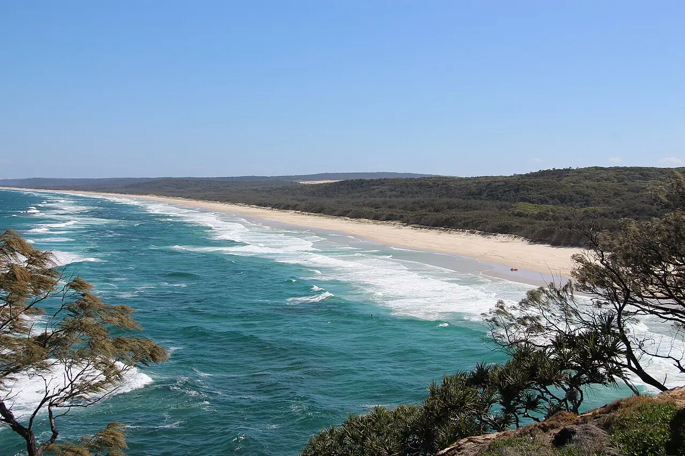

Point Lookout — Main Beach
North Stradbroke Island, Queensland, Australie · surf, bodyboard, baignade

Au pied du cap de Point Lookout, Main Beach déroule une longue plage exposée à la houle du Pacifique. Le cap offre plusieurs orientations : Cylinder Beach, plus abritée, convient mieux aux débutants.
- Lieu
- North Stradbroke Island, Queensland, Australie
- Niveau
- Intermédiaire
- Activités
- surf, bodyboard, baignade
- Type d'eau
- Mer / océan
- Coordonnées
- -27.44, 153.54 (position approximative du secteur)
Dangers à connaître
- Courants d’arrachement puissants sur Main Beach : baigne-toi entre les drapeaux.
- Rochers au pied du cap.
Le conseil d'Ocean Buddy
Monte d’abord sur le sentier des gorges du cap pour lire la houle et repérer les courants avant d’entrer à l’eau.
Ouvrir dans Ocean Buddy Télécharger sur l'App Store
Source : Fiche Ocean Buddy · septembre 2026 · à vérifier localement.